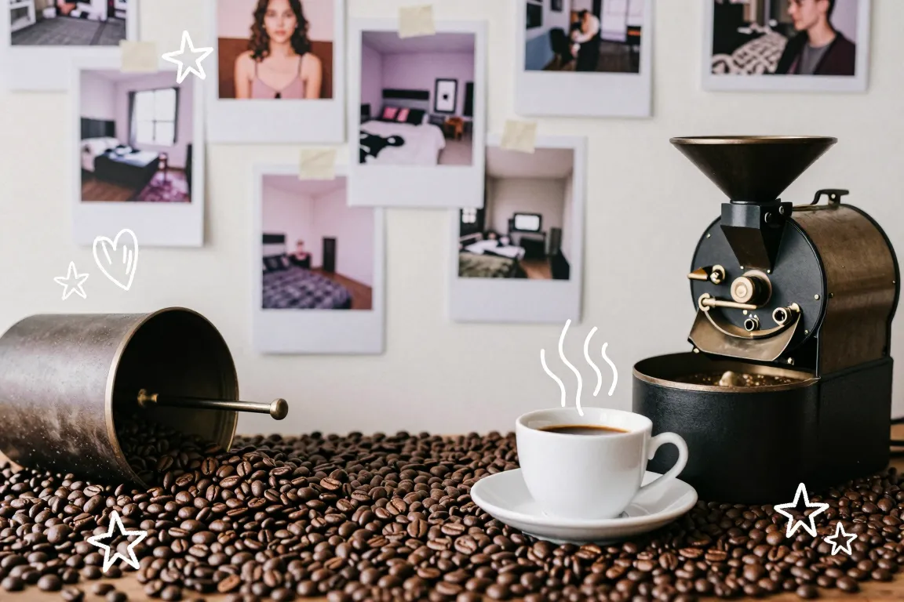

internet · 2012–now · also: Soft grunge, Tumblr aesthetic, Pale grunge
A pale, moody photo look from reblog blogs: faded pastel on a dark ground, film grain, light leaks, torn paper edges and small typewriter captions. It is sad and soft, not loud.

Core thesis
A feed of reblogged scraps that feels like a teenager's wall: faded, tender and a little broken.
Design principles
Set the ground at a dark mauve-grey (#2A2528) and let photos fade to pastel pink (#E6A5B8) and sage (#9FB8A8).
Lift the blacks to 15% grey, lower the saturation to 60% and add a grain of 8% to 12%.
Add a light leak: a warm orange or pink gradient across 20% to 30% of one photo edge at 40% opacity.
Crop photos to 500px to 540px wide and stack them in one column of the dashboard with 20px gaps.
Tilt overlaid stickers and tape by 2° to 5° and tear the paper edge at 6px to 10px.
Set captions in a typewriter face at 13px in lower case with a pale grey (#C7B8BE) colour.
Overlay a thin quote in a script or a typewriter face over the photo at 70% opacity.